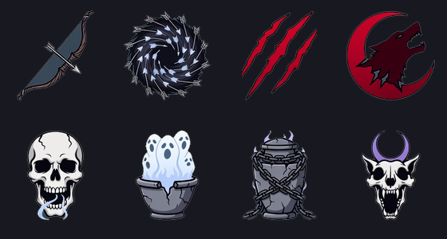
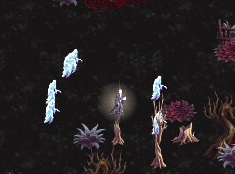
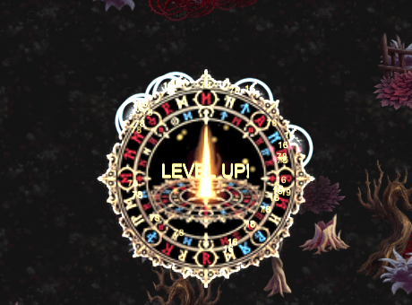

手搓廣告遊戲選集 · 吸血鬼復仇 · v3 完成
獵魔弓的設計上限在真機上碰不到；六隻僕從的計數器全綠但畫面上一隻都沒有。 兩個都不是資料驗證抓得到的，是實機量測與截圖抓到的。
四項全部做完並實機驗證過了。中間發現兩個「數字全對但東西是壞的」的問題， 都寫在下面——那兩個比功能本身值得看。
我把「飛 1000px 吃滿 +120%」寫進資料表、資料驗證也過了。實機一量才發現：
[V3] 瞄準上限 TargetRange = 6.2 單位 = 371 px
VrDirector.TargetRange ＝ 攝影機可視範圍 ×0.95，直式手機上約 402 px。
超過那個距離的敵人自動瞄準根本不會挑中——所以那個 +120% 的上限
在真機上永遠碰不到，等於白寫。資料層看不出來，因為它只是一個沒人達得到的數字。
重新校正成：每 100px +22%、上限 +90%（409px 剛好吃滿）、近身 150px 內 ×0.45。 並且把「加成吃滿的距離必須 ≤ 420px」寫成資料層的硬條件——下次有人調參數 調到碰不到的地方，會當場失敗。
距離 1.5 單位 → 一發打 6.9 （近身懲罰）
距離 3.5 單位 → 一發打 18.9
距離 5.5 單位 → 一發打 22.6
遠/近 = 3.27 倍（設計 ≈3.2） ✓
額外發數：伯爵 +0 獵人 +1 ✓ 獵人天賦仍然多一發
量單發傷害時故意用伯爵不是獵人：獵人的天賦一次射兩發，兩發會在不同距離 命中，量到的「第一次掉血」有時是兩發相加、有時只有一發，比值完全沒有意義 （第一次量到 1.60 倍，實際單發是 3.27 倍）。距離規則掛在武器上，跟拿的人無關。
進化「暴風之眼」 ＝ 你原本提的兩個方向（導引 ＋ 多重）一起給， 近身懲罰也放寬到 ×0.75。鑰匙是複製護符 2 級——那個被動 MaxLv 只有 2， 照慣例寫 3 的話這條進化永遠湊不出來。這一條是新加的資料驗證抓到的 （同時抓到我把萬魂哀歌的鑰匙也寫成 3 級）。
站著 → 一刀 78.0（移動量 0.00）
跑著 → 一刀 156.0（移動量 1.00）
跑/站 = 2.00 倍 ✓
移動量的追蹤放在 VrWeapons 而不是 VrPlayer——亡靈也會用撕裂爪，
它跑的是同一份武器程式碼，放在武器層就自動一致，不用另外接線。
分母用「基準速度」而不是持有者自己的速度：用自己的速度的話，狼人的 +15% 移速會被自動抵銷掉（跑更快但分母也更大），那個天賦就完全沒有回報。
傷害倍率：伯爵 1.000 → 屍語者 0.820 = ×0.820 ✓
僕從上限=3 餵 200 擊殺 → 3 隻（卡在上限） ✓
轉職亡者牧者 → 上限 6 → 補到 6 隻 ✓
僕從在場時擊殺數 +7 ✓ 擊殺有記帳（走 Director.Hit，掉寶與分數都算）
把玩家與每一隻僕從的座標印出來才看見：
玩家@(17.6, 0.4) 僕從全部還在 (1.2, 0.0) 與 (6.3, 0.9)
第一版的僕從只會追「最近的敵人」。敵人清空的那一刻它們就停在原地， 而且永遠不會回頭找玩家——而這款遊戲的玩家是一直在跑的。 生成數、上限、擊殺記帳、傷害倍率全部是綠的，因為那些測的都是計數器。
修了三件事，每一件都是分開踩到的：
| 問題 | 修法 |
|---|---|
| 沒有敵人時停在原地 | 沒有可追的敵人就回到玩家身邊 |
| 基礎速度 132 比玩家 180 慢，永遠追不上 | 落後時加速，最多兩倍 |
| 六隻的目標點都是「玩家的位置」→ 疊在同一個像素，看起來只有一隻 | 每隻有自己的環繞站位角度 |
修完之後（玩家站定 7 秒）：
玩家@(29.2, 5.0) 六隻各自在 d=1.1 ~ 1.7 的環繞位置 ✓
一路衝刺時穩定咬在 4.4 個單位（畫面高度約 13 單位，看得到）
已經寫成 invariants.md 第 12 條。
順帶一提，這個 bug 差點被測試自己蓋掉。 我讓玩家「站著不動 7 秒」再拍照， 結果那 7 秒裡玩家又跑了 21 個單位——
DebugDriving = false是「把控制權還給 真實輸入」，不是「停下來」。要停得寫DebugDriving = true加輸入 0。
僕從用玩家主武器時傷害 ×0.35：不打折等於直接把輸出乘以僕從數量， 六隻各跑一份滿等主武器會蓋過遊戲裡的一切。資料驗證斷言「6 隻的合計 ≤ 玩家的 2.5 倍」（現在 2.10）。
滿血時狂化=False ✓
打到 20/80（25%）→ 狂化=True ✓
狂化中 ExtraSpdMul=1.30 ✓
狂化中回血 50 → 血量 20 → 20 ✓ 被擋住
擋回血擋在 Heal 這一個出口，不是去關掉每一個回血來源——來源有五個以上
（生命藥草、吸血、拾取物、商人、天使雕像），逐個關一定會漏，而且以後新增
一個又要記得處理。擋在唯一的出口上，「不能回血」就永遠是真的。
移速跟疾速藥劑合併成單一寫入點相乘。 兩個地方各自賦值的話，後跑的會把 前一個整個蓋掉——症狀是「喝了疾速藥劑反而沒變快」，而且看誰排後面。
我一開始用洋紅幕，結果深紅色的主體被吃掉——撕裂爪整組消失、血月被去背成 純黑、獵魔弓的木頭被 despill 染成紫色。這跟「綠幕遇到綠色主體」是同一個失敗模式， 而專案規則本來就寫著「預設綠幕，只有主體是綠色系才換洋紅」。這批主體是紅／白／銀， 是我挑錯。$0.20 的學費，已照規則記進 SPEND.md。
改綠幕之後一次就過，8 個全部採用：

抽出來的主體原本只佔 256px 裡的 76×120，比其他角色小一大截。 另外寫了一支依「所有幀的聯集邊界」統一裁切放大的工具——用聯集而不是 逐幀，才不會播起來忽大忽小。沒有為了這個重新花錢生成。 佔框比例 0.91，其他角色是 0.73～0.94，對得齊。


三組特效（撕裂爪／血月狂襲／萬魂哀歌）各 14 幀，實機確認載得到。
| 項目 | 金額 |
|---|---|
| 圖示彙整圖（洋紅幕，作廢） | $0.20 |
| 圖示彙整圖（綠幕，採用） | $0.20 |
| 角色彙整圖（屍語者 + 僕從） | $0.20 |
| 屍語者 走路 + 攻擊 影片 ×2 | $0.64 |
| 特效影片 ×3 | $0.96 |
| 合計 | $2.20 |
提案時估 ②③④ 全做是 $3.36 ~ $4.52，實際 $2.20（含作廢的 $0.20）。 省下來的地方是兩個新職業沒有各自的走路動畫——它們退回角色本身的動畫， 跟血族領主現在的處理一樣。要補的話是 4 支影片 $1.28，跟我說。
IDamageSink 等價性、v2 五項、資料層全套（含新加的起手武器綁定、進化配方
完整性、共用鑰匙的角色互斥、距離曲線要在瞄準上限內吃得滿）——全過。
兩輪編譯 0 錯。